smooth rest-to-rest moves between given configurations or poses (the building blocks)
The tool in a straight line along one axis, out and back: the short linear legs before and after a point (Pilz LIN legs; bam_reach's lift recipes are an approach plus a retreat). The orientation is held throughout.
needs joint limits + forward kinematics + inverse kinematics
tracking evalstop accuracycycle timecontact eval
trajectory = approach_retreat(ur5e_plus)
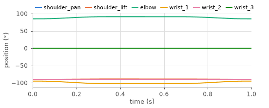
1.0 s · 501 samples · 1 segment · on UR5e · + kinematics, gravity, drive and jerk limits (stand-ins from tests/fixtures)
The tool from where it is to a goal pose, by inverse kinematics at the ends and one joint-space leg between them (rest to rest under waypoint_generator), through via poses first when given: the "A to B" of bam_reach's trajectory dataset.
needs joint limits + forward kinematics + inverse kinematics
tracking evalworkspace coveragecycle time
trajectory = cartesian_a_to_b(ur5e_plus)
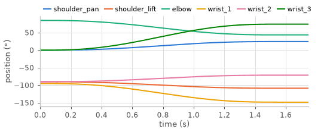
1.7 s · 875 samples · 1 segment · on UR5e · + kinematics, gravity, drive and jerk limits (stand-ins from tests/fixtures)
The tool along a circular arc from where it is to goal (default: a 4 cm arc in the xy plane) (an xyz point in metres, or a 4x4 pose, in the kinematics' base frame), at rest at both ends, inverse kinematics at every eef_step_m and refused at the first sample that fails: Pilz's CIRC.
needs joint limits + forward kinematics + inverse kinematics
tracking evalaccuracydemo
trajectory = cartesian_arc(ur5e_plus)
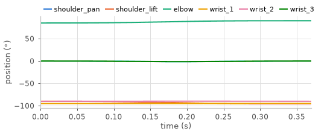
0.4 s · 186 samples · 1 segment · on UR5e · + kinematics, gravity, drive and jerk limits (stand-ins from tests/fixtures)
The tool in straight lines from where it is through points_or_poses (xyz points in metres, or 4x4 poses, in the kinematics' base frame), inverse kinematics at every eef_step_m and refused at the first sample that fails (MoveIt's computeCartesianPath; Pilz's LIN). Each line is one rest-to-rest leg under waypoint_generator; dwell_s holds at each point.
needs joint limits + forward kinematics + inverse kinematics · row cartesian_straight_line
tracking evalaccuracyworkspace coverage
trajectory = cartesian_path(ur5e_plus, [tool, tool + (0.0, 0.1, 0.0)])
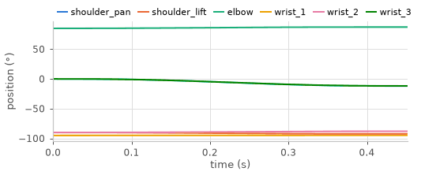
0.5 s · 227 samples · 1 segment · on UR5e · + kinematics, gravity, drive and jerk limits (stand-ins from tests/fixtures)
The tool visits each of points_or_poses (xyz in metres, or 4x4 poses) and dwells there; between them the joints move in rest-to-rest legs under waypoint_generator (inverse kinematics at the points only, each seeded from the last): the Cartesian twin of joint_waypoints. The tool does not move in straight lines between points (that is cartesian_path).
needs joint limits + forward kinematics + inverse kinematics
tracking evalstop accuracyaccuracycycle timedemo
trajectory = cartesian_waypoints(ur5e_plus, [tool + (0.05, 0.0, 0.0), tool + (0.0, 0.08, -0.05)])
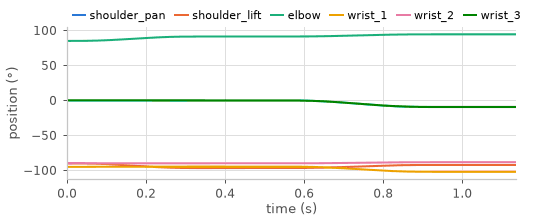
1.1 s · 569 samples · 1 segment · on UR5e · + kinematics, gravity, drive and jerk limits (stand-ins from tests/fixtures)
Move back to the space's home: the building block that ends a session where it began (no catalog row).
needs joint limits
trajectory = home(pendulum)
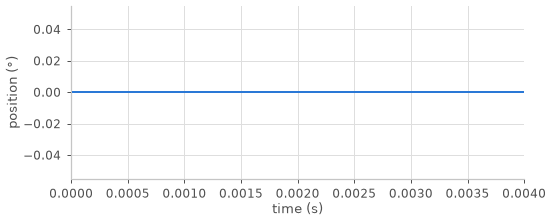
0.0 s · 3 samples · 1 segment · on CAN 11 pendulum · bare limits
A rest-to-rest move to target (absolute joint positions, rad) convolved with a ZV or ZVD impulse sequence tuned to a lightly damped mode, so the arm ends with no residual vibration at that mode (Singer and Seering, 1990).
needs joint limits + dynamics model
tracking evalstop accuracycycle time
trajectory = input_shaped_move(ur5e_plus)
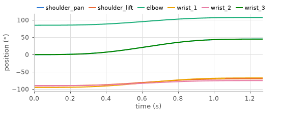
1.3 s · 637 samples · 1 segment · on UR5e · + kinematics, gravity, drive and jerk limits (stand-ins from tests/fixtures)
Rest-to-rest moves through waypoints given as fractions of the room, each leg a time-optimal jerk-limited S-curve (the double-S profile, Ruckig) under velocity_fraction / acceleration_fraction / jerk_fraction of the space's limits.
needs joint limits + jerk limits
tracking evalcycle timespeed limits
trajectory = jerk_limited_scurve(ur5e_plus)
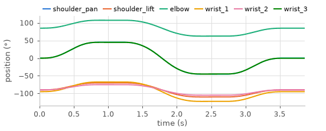
3.9 s · 1,934 samples · 1 segment · on UR5e · + kinematics, gravity, drive and jerk limits (stand-ins from tests/fixtures)
Rest-to-rest moves through absolute joint configurations (waypoints, M x J rad; a flat list on a 1-DOF robot), each leg timed by waypoint_generator, dwelling dwell_s at each: multi-waypoint motion in joint space (the classic PTP sequence).
needs joint limits
tracking evalstop accuracycycle timedemo
trajectory = joint_waypoints(ur5e, np.radians([[30, -70, 100, -80, -80, 30], [-30, -110, 60, -120, -100, -30]]))
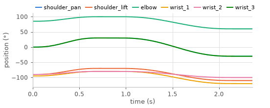
2.4 s · 1,181 samples · 1 segment · on UR5e · joint limits
Rest-to-rest moves through waypoints given as fractions of the room around the start, each leg timed by waypoint_generator (minimum-jerk by default: x = x0 + d (10 s^3 - 15 s^4 + 6 s^5), peaking at 1.875 d / T), with a dwell at each, then back to the start: the house leg of every waypoints tape (the rack runner's q:move_s:dwell_s;...).
needs joint limits · row minimum_jerk_move
tracking evalstop accuracypid tuningdemo
trajectory = move(ur5e)
4.1 s · 2,066 samples · 1 segment · on UR5e · joint limits
A cubic (order=3: position and velocity at both ends) or quintic (order=5: also acceleration) polynomial from the start state to target over duration_s. The start is a State: a configuration starts at rest, a trajectory that ended moving hands its exact state on. The end state is end_velocity_rad_s and end_acceleration_rad_s2 (default rest), so a move can end moving into the next one (chain joins a moving end to a start in that exact state).
needs joint limits
tracking eval
trajectory = polynomial_move(ur5e)
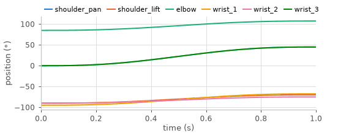
1.0 s · 501 samples · 1 segment · on UR5e · joint limits
The fastest timing along a fixed joint path under velocity_fraction / acceleration_fraction of the space's limits, rest to rest: TOPP-RA (Pham & Pham 2018) on a cubic spline through every point, grid_points its grid.
needs joint limits
cycle timespeed limits
trajectory = time_optimal_path(ur5e)
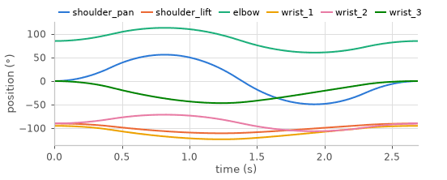
2.7 s · 1,347 samples · 1 segment · on UR5e · joint limits
One synchronised joint move to target (absolute joint positions, rad) under a trapezoidal velocity profile: accelerate, cruise, decelerate (Pilz PTP's profile; a triangle when the distance is too short to cruise). Every joint arrives together: the slowest one sets the time, the others are scaled to it, so the joint-space line is straight.
needs joint limits
tracking evalcycle time
trajectory = trapezoidal_velocity(ur5e)
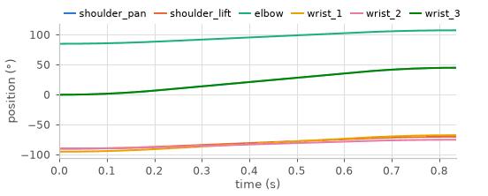
0.8 s · 419 samples · 1 segment · on UR5e · joint limits
One smooth motion through via_points (M x J absolute joint positions, rad) without stopping at them, at rest at the start and at the last one: the blended sequence of Pilz (a corner is cut, never stopped at), or a spline through the points.
needs joint limits + jerk limits
tracking evalcycle timedemo
trajectory = via_point_spline(ur5e)
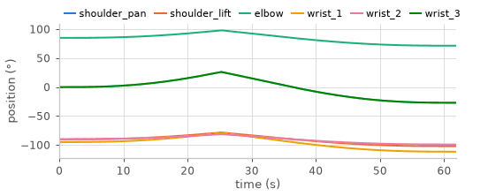
61.9 s · 30,943 samples · 1 segment · on UR5e · joint limits